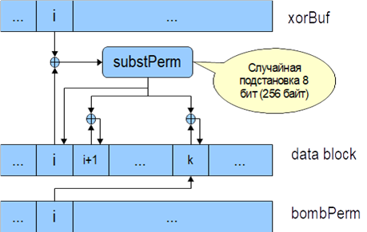

Кроме алгоритмов шифрования классической структуры существует ряд алгоритмов шифрования с альтернативными структурами. К таким алгоритмам относятся шифры FROG, HPC и некоторые другие. С одной стороны, исследование стойкости данных алгоритмов является более сложным, так как к ним неприменимы классические методы криптоанализа блочных шифров, с другой стороны, их поведение недостаточно изучено для уверенности в их стойкости. К алгоритмам неклассической структуры относятся алгоритмы с использованием управляемых операций, т. е. блочные шифры, структура которых зависит от обрабатываемых данных. В качестве примера блочного шифра неклассической конструкции рассмотрим алгоритм «FROG».
Алгоритм FROG состоит из 8 раундов преобразования, каждое из которых использует случайную подстановку размерности 8 бит и два псевдослучайных буфера (XORbuf и bombPerm) размером 256 байт, которые генерируются с использованием ключа алгоритма шифрования. На подстановку накладываются некоторые ограничения, например, отсутствие циклов. Особенностью этого шифра является побайтная обработка блока данных и, таким образом, алгоритм легко может быть адаптирован для блока произвольной длины. Структура раундовой функции приведена на рис. 3.6. Алгоритм является байтовым, т. е. обрабатывает за один раз по одному байту. Также алгоритм использует случайную подстановку размерности 8 бит, и два буфера размером 256 байт, имеющих специальное заполнение. Вырожденные случаи случайного заполнения выявляются и отсеиваются на этапе инициализации шифра. Очередной байт открытого текста складывается по модулю 2 с первым буфером, результат пропускается через подстановку и записывается на место исходного байта. Дополнительно байт, следующий за текущим, и байт в позиции второго буфера по адресу, который равен значению текущего зашифрованного байта, модифицируются с помощью операции сложения по модулю 2 с значением текущего зашифрованного байта.
 |
Рис. 3.6. Структура раундовой функции алгоритма FROG |
Создатели алгоритма утверждают, что уже после трех раундов устраняется любая статистическая избыточность исходных данных, поэтому после восьми итераций данные будут гарантированно рандомизироваными. Достоинствами алгоритма являются высокая скорость работы, в 2 раза выше AES, возможность использования любой длины блока и ключа без увеличения вычислительной сложности, использование только простых операций.